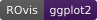

Check whether a font family is available on the system
Source:R/ro_check_if_font_available.R
ro_check_if_font_available.Rd![[DT]](figures/group-DT.svg)

Used by ro_gg_theme and ro_e_theme to resolve the font family before building a chart. When the RijksoverheidSansWebText font is requested but not installed, the function tries
"Verdana", then "Arial", and only
uses one that is actually installed. If neither is available either (for
example on Linux/CI images that ship none of them), the function informs
the user and falls back to the first font it can find on the system. When
any other font is requested but not installed, the function aborts with
an actionable error message.
Usage
ro_check_if_font_available(
target_font_family,
arg = caller_arg(target_font_family),
call = caller_env()
)Arguments
- target_font_family
Character. Font family name to check. No default: this is a validation function, so a sensible default (e.g.
"RijksoverheidSansWebText") belongs in the calling plotting functions (e.g.ro_gg_theme(),ro_ply_theme()), not here.- arg, call
Passed on to
rlang::abort()/cli::cli_abort()so that messages cite the argument name used by the calling function (e.g.base_familyinro_gg_theme()) instead of this function's owntarget_font_familyparameter. Only relevant for programmatic callers that want to override the automatically detected argument name.
Value
The resolved font family name: target_font_family itself if
installed; otherwise, for the RO font, the first available font among
"Verdana" and "Arial", or (if neither is installed) the first font
found on the system. Aborts for any other unavailable font.
See also
Other ggplot2:
get_color_palette(),
ro_color(),
ro_color_categorical(),
ro_color_palette(),
ro_color_seq(),
ro_color_seq_named(),
ro_color_validate(),
ro_get_color_palette(),
ro_gg_create_palette(),
ro_show_colors(),
ro_show_colors_get_df()
Other ggplotly:
ro_color(),
ro_color_categorical(),
ro_color_palette(),
ro_color_seq(),
ro_color_seq_named(),
ro_get_color_palette()
Other plotly:
ro_color(),
ro_color_categorical(),
ro_color_palette(),
ro_color_seq(),
ro_color_seq_named(),
ro_get_color_palette()
Other echarts4r:
ro_color(),
ro_color_categorical(),
ro_color_seq(),
ro_color_seq_named()